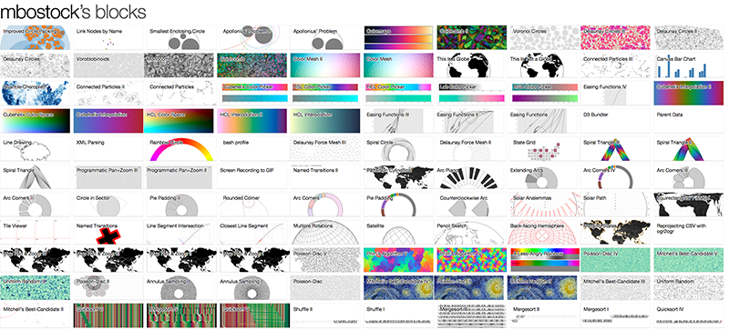

Created by Jeff Boulay / @jeffboulay
D3.js is a JavaScript library for manipulating documents based on data. D3 helps you bring data to life using HTML, SVG, and CSS. D3’s emphasis on web standards gives you the full capabilities of modern browsers without tying yourself to a proprietary framework, combining powerful visualization components and a data-driven approach to DOM manipulation.
jQuery is a fast, small, and feature-rich JavaScript library. It makes things like HTML document traversal and manipulation, event handling, animation, and Ajax much simpler with an easy-to-use API that works across a multitude of browsers. With a combination of versatility and extensibility, jQuery has changed the way that millions of people write JavaScript.
Let's have a look.
d3.select('#foo')
.style('background', '#000')
.on('click', function() {})
.append('div');
$('#foo')
.css('background', '#000')
.click(function() {})
.append($('<div></div>'));
d3.json('foo.json',
function(err, data) { });
$.getJSON('foo.json',
function(data) { });
d3.selectAll("p")
.data([4, 8, 15, 16, 23, 42])
.style("font-size", function(d) { return d + "px"; });
d3 allows for a wide array of formats that it able to work with. Downloads are done asynchronously. Because the data is only executed once we have it fully downloaded we need to break it up.
// 1. Code here runs first, before the download starts.
// this is where you setup the d3 object
d3.json("data.json", function(error, data) {
// 3. Code here runs last, after the download finishes.
// this is where you put your code to process the data
});
// 2. Code here runs second, while the file is downloading.
// this is a good location for methods that massage the data as well as event binding methods
function type(d) {
d.value = +d.value; // coerce to number
return d;
}
var p = d3.select("body").selectAll("p")
.data([4, 8, 15, 16, 23, 42])
.text(String);
p.enter().append("p")
.text(String);
p.exit().remove();
So lets say you have a bar chart and you want the max height of the chart to be 420px you also want the graph show the top performing bar as 420px tall and scale all other bars to that scale. Here is how you would do this.
var y = d3.scale.linear()
.domain([0, d3.max(data)])
.range([0, 420]);
d3.select(".chart")
.selectAll("div")
.data(data)
.enter().append("div")
.style(“height", function(d) { return y(d) + "px"; })
.text(function(d) { return d; });
Note that this returns a function! This is now a helper function we can use to map our values from our domain to our range:
y(10);
y(50);
y(100);
you can also do ordinal scales too as an example
var risk = d3.scale.ordinal()
.domain(['low', 'moderate', 'high','severe'])
.range(['low-chart', 'moderate-chart', 'high-chart', 'severe-chart']);
rangeRoundBands is a D3 helper method to give even space and padding between elements in the domain
var x = d3.scale.ordinal()
.domain(data.map(function(d) { return d.name; }));
.rangeRoundBands([0, width], .1);
For time domains. This can also be used for axis labeling.
var xScale = d3.time.scale()
.domain([new Date("01/01/2013"), new Date("30/12/2013")])
.range([0, 600]);
xScale(new Date("06/31/2013")); //296.6346153846154
D3 focuses on transforming data and maintaining the relationship while allowing for rich interaction. Because D3 uses web standards as new features become available you can use them immediately
Transitions also follow transformation principal. So you are transitioning from the old value to the new value
d3.select("body").transition()
.style("background-color", "black");
Or, to resize circles in a symbol map with a staggered delay:
d3.selectAll("circle").transition()
.duration(750)
.delay(function(d, i) { return i * 10; })
.attr("r", function(d) { return Math.sqrt(d * scale); });
var margin = {top: 20, right: 30, bottom: 30, left: 40},
width = 960 - margin.left - margin.right,
height = 500 - margin.top - margin.bottom;
D3 has some great helper methods for dealing with adding Axis to your graph
var xAxis = d3.svg.axis()
.scale(x)
.orient("bottom");
Events are easy to apply in D3.
d3.select("#vis")
.on("mouseover", function(d) {
// 'this' is the element
// 'd' is the datum associated with it
// to act on this element with d3, we have to
// reselect it:
d3.select(this).classed("selected", true);
});
Working with Arrays - d3 has a huge collection of helper methods that help us transform our data so that it can then be visualized. Anything from grouping data, to reducing it, to easily applying transformations to each data element.
https://github.com/mbostock/d3/wiki/ArraysWe can't possibly cover all aspects of d3 here, but there are some additional elements of it that are incredibly useful:
Resources